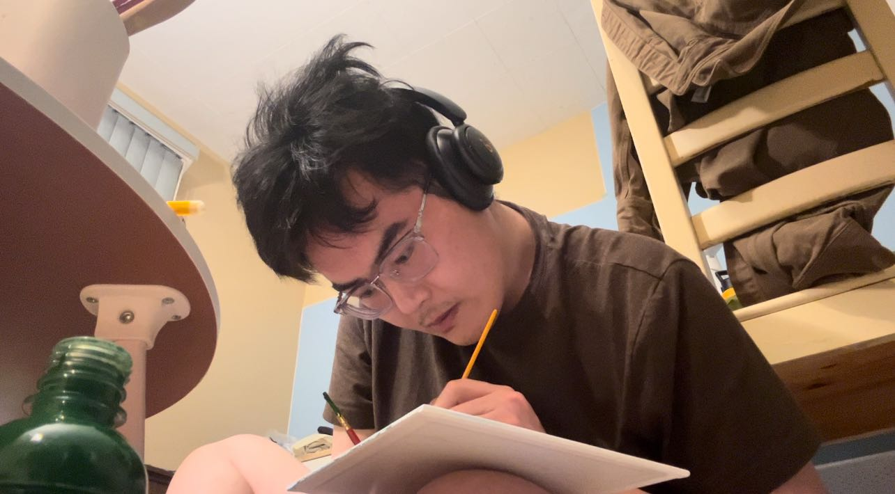

Hi, I'm Yǒng
I started painting at the age of 10. I practice ny myself and this is my favorite hobby to kill time. I like oil and acrylic paintings, like impressionism and realistism. Nature is always on my canvas, and I am developing my skills on portraits.
Besides, I am a potential technical writer. I am good at writing and formatting with my skills and patience.
Skills & Passions
Oil/Acrylic Painting
Express what language can't.
Technical Writing
Creating clear, concise documentation and user guides.